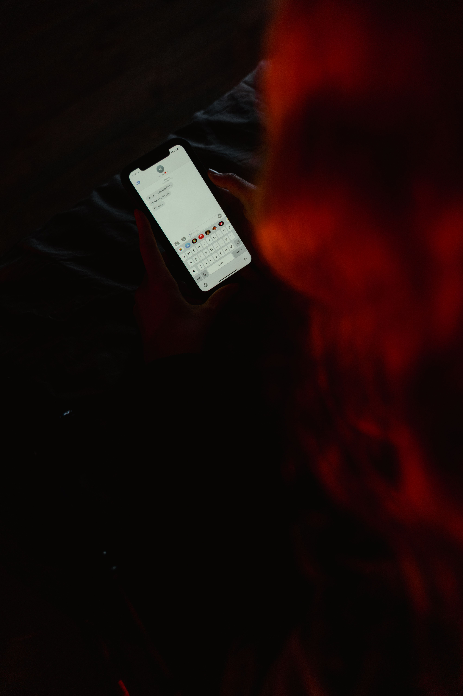

Sociale media hebben een krachtige invloed op het jonge brein, dat nog volop in ontwikkeling is. Omdat de hersenen van tieners extra gevoelig zijn voor beloningen en sociale goedkeuring, reageren ze sterk op de prikkels van platforms zoals Instagram en TikTok
Dopaminestoten: Elke like, reactie of nieuwe melding zorgt voor een kleine afgifte van dopamine in de hersenen.
Dopaminestoten: Elke like, reactie of nieuwe melding zorgt voor een kleine afgifte van dopamine in de hersenen.
Je kind groeit op in een wereld vol Likes, video's en online contacten.
Hoe begeleid jij je kind zonder het gevoel te geven dat je alles wilt controleren?

Dit is het verhaal van Liqra, een 25 jarige vrouw die op 12 jarige leeftijd slachtoffer werd van gecyberpest op de middelbare school. Maar voor haar bleef helaas niet alleen bij online pesterijen. ze werd overspoeld met kwetsende woorden en ontving constant pijnlijke berichten. De pesterijen leken maar niet op te houden. Woorden die haar na 13 jaar nog steeds raken. Het was haar schuld niet, maar alsnog sprak ze er niet over.
" als ik weer terug denk aan dat moment, wil ik mijzelf een grote knuffel geven" zegt ze.
Een knuffel voor het meisje dat zoveel heeft doorstaan, voor het meisje dat niet verdiende wat haar is aangedaan. en misschien vooral voor het meisje dat alleen maar had moeten horen dat ze niet alleen was.